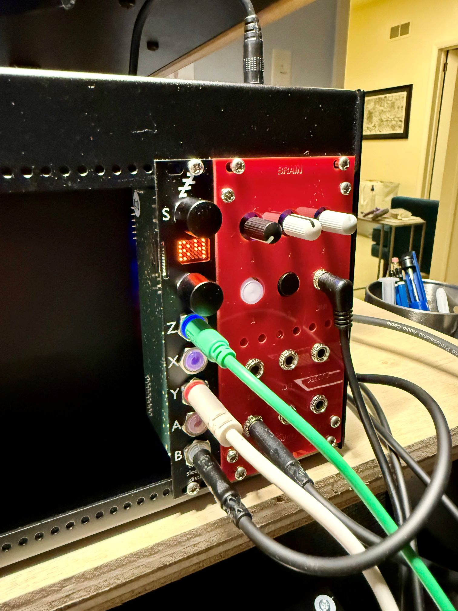
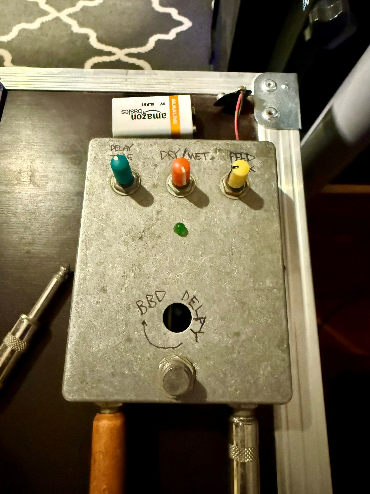

Notes
I took the plunge and bought a small Eurorack enclosure: a 4ms Pod 64x. You gotta start somewhere. I put a rack-mounted version of the Shmoerg Brain module in there (4HP) and also picked up an Expert Sleepers Disting Mk4, a versatile utility module that does about a million things: quantizer, clockable LFO or delay/echo, CV->MIDI and back, many others. I'm just scratching the surface of what it can do.
For this track I modulated the VCF in the Moduleur with an LFO synced to Ableton's clock (via the Keystep's Sync output) and tweaked things until they sounded interesting. The kick is just the TR-707 passed through an old Bucket Brigade Delay (BBD) guitar pedal that I built twenty years ago when I played in a band.